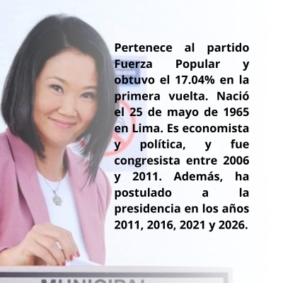
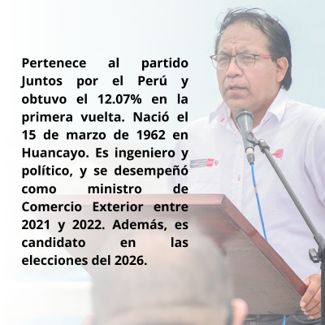

—
Contabilizadas
—
Para JNE
—
Pendientes
—
% Avance
Resultado de Votos Válidos — Segunda Vuelta Presidencial

Keiko Fujimori
Fuerza Popular

Roberto Sánchez
Juntos por el Perú
Votos por Candidato
Avance de Actas
—
procesadas
Comparativa de Resultados
| Candidato / Partido | Votos | % Válidos | % Total |
|---|
Datos Generales
Electores habilitados
27,000,000
Mesas de sufragio
86,488
Centros de cómputo
126
Voto en el exterior
900,000
Total actas
—
Última actualización
—